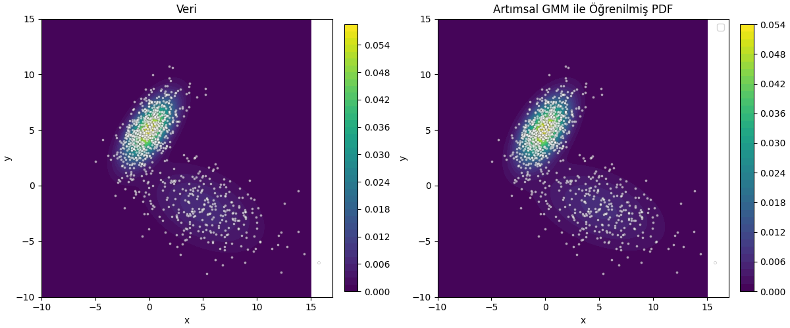

Gaussian Karışım Modelleri (Mixtüre Models / GMM) [1]’de işlendi. O yazı her biri \(d\) boyutlu olabilecek \(G\) tane Gaussian’dan oluşan bir karışım ile veriyi temsil edebilmekten bahsediyordu. Bu tür bir modelde bilinmeyenler \(G\) tane Gaussian’ın parametreleriydi, yani her Gaussian için D x 1 boyutunda bir \(\mu\), D x D boyutunda bir \(\Sigma\), ve tüm karışım için karışım seviyelerini gösteren D x 1 boyutunda bir \(\pi\) bulunması gerekiyordu. Eğer [2] notasyonu ile gösterirsek, karışım olasılık dağılım fonksiyonu,
\[ p(x) = \sum _{g=1}^{G} \pi_g N(x | \mu_g, \Sigma_g) \]
oluyordu, ki \(x \in R^{D}\).
Dikkat edersek [1] yazısı veriyi toptan (batch) işleyen bir yaklaşım gösterdi, bu yaklaşım, ki Beklenti-Maksimizasyon (Expectation-Maximization / EM) adıyla bilinir, döngüsünün her adımında verinin tamamını işliyordu. Bu yazıda veriyi azar azar, artımsal şekilde işleyerek yaklaşık EM yapmanın tekniğini göreceğiz. Eğer her veri noktası aynı şekilde dağılmış, bağımsız şekilde geliyorsa uzun vadede bu artımsal öğrenim tekniği normal toptan EM’in bulduğu sonuca yaklaşacaktır.
Notasyon şöyle, veriler \(x_i\) olarak geliyor, \(i\) bir indistir, ve \(i = 1,..,m,m+1\) olarak gider. Bizi ilgilendiren önemli an \(m\) anından \(m+1\) anına geçiş, yani \(m\)’ye kadar olan model parametrelerini \(m+1\)’inci veri gelince ona göre güncellemek.
Bu bağlamda ilk varsayımı, yaklaşıksallamayı şöyle yapalım, tek bir veri noktası eklediğimizde GMM modelinin parametrelerinin çok fazla değişmesini beklemeyiz, o zaman GMM karışımının içindeki \(g\)’inci Gaussian \(x_{i+1}\) verisi üzerinde hesapladığı olasılık / sorumluluk (responsibility) şöyle gösterilebilir,
\[ p^{(m+1)}(C_g | \mathbf{x}_i) \approx p^{(m)}(C_g | \mathbf{x}_i) \qquad (1) \]
Karışım Ağırlıkları \(\pi_g\)
Her \(g\) bileşeni için karışım ağırlığı tüm \(m\) verileri üzerinden hesaplanan ortalama sorumluluktur. Bu hesap tabii ki toptan EM mantığından geliyor, referans için [2],
\[ \pi_g^{(m)} = \frac{1}{m} \sum_{i=1}^{m} p^{(m)}(C_g | \mathbf{x}_i) \]
Yeni \(x_{m+1}\) verisi gelince üstteki formül doğal olarak alttaki gibi olur,
\[ \pi_g^{(m+1)} = \frac{1}{m+1} \sum_{i=1}^{m+1} p^{(m+1)}(C_g | \mathbf{x}_i) \]
Şimdi (1)’deki yaklaşıksallamayı kullanırız,
\[ \pi_g^{(m+1)} \approx \frac{1}{m+1} \left( \sum_{i=1}^{m} p^{(m)}(C_g | \mathbf{x}_i) + p^{(m)}(C_g | \mathbf{x}_{m+1}) \right) \]
Hatırlarsak,
\[ \sum_{i=1}^{m} p^{(m)}(C_g | \mathbf{x}_i) = m \pi_g^{(m)} \]
O zaman,
\[ \pi_g^{(m+1)} \approx \frac{1}{m+1} \left( m \pi_g^{(m)} + p^{(m)}(C_g | \mathbf{x}_{m+1}) \right) \]
Burada bir tekrar düzenleme daha yapalım. Eşitliğin sağ tarafını mevcut kestirme hesabı \(\pi_g^{(m)}\) artı bir düzeltme terimi olarak düşünelim. Bunu ortaya çıkartmak için şöyle yazabiliriz,
\[ \pi_g^{(m+1)} \approx \pi_g^{(m)} + \left[ \frac{1}{m+1} \left( m \pi_g^{(m)} + p^{(m)}(C_g | \mathbf{x}_{m+1}) \right) - \pi_g^{(m)} \right] \]
Üstte bir \(\pi_g^{(m)}\) ekledik ve bir tane de çıkarttık, böylece aslında hiçbir değişim yapmamış olduk. Formül hala aynı şey söylüyor. Şimdi köşeli parantez içindekiler için ortak bir bölen \((m+1)\) yaratalım,
\[ \pi_g^{(m+1)} \approx \pi_g^{(m)} + \frac{1}{m+1} \left( m \pi_g^{(m)} + p^{(m)}(C_g | \mathbf{x}_{m+1}) - (m+1)\pi_g^{(m)} \right) \]
Parantez icindeki ifadeleri basitlestirelim,
\[ m \pi_g^{(m)} + p^{(m)}(C_g | \mathbf{x}_{m+1}) - m\pi_g^{(m)} - \pi_g^{(m)} = p^{(m)}(C_g | \mathbf{x}_{m+1}) - \pi_g^{(m)} \]
Geri sokalım,
\[ \pi_g^{(m+1)} \approx \pi_g^{(m)} + \frac{1}{m+1} \left( p^{(m)}(C_g | \mathbf{x}_{m+1}) - \pi_g^{(m)} \right) \]
Böylece karışım ağırlıkları için özyineli güncelleme formülüne erişmiş olduk.
Ortalama \(\mu_g\) Güncellemesi
Bileşen \(g\)’nin ortalaması şöyle tanımlıdır,
\[ \mu_g^{(m)} = \frac{1}{m \pi_g^{(m)}} \sum_{i=1}^{m} p^{(m)}(C_g | \mathbf{x}_i) \mathbf{x}_i \]
Bu ifade toptan EM matematiğinden geliyor [1].
\(m \pi_g^{(m)}\) ile bölüm ifadesini eşitliğin sol tarafına geçirip ona \(S_g^{(m)}\) diyebiliriz,
\[ S_g^{(m)} = \sum_{i=1}^{m} p^{(m)}(C_g | \mathbf{x}_i) \mathbf{x}_i = m \pi_g^{(m)} \mu_g^{(m)} \qquad{(2)} \]
Yeni veri noktası \(\mathbf{x}_{m+1}\) geldiğinde üstteki toplama bir terim daha eklenmiş olacaktır, yani mevcut toplam \(S_g^{(m)}\) artı yeni veri için gereken terim,
\[ S_g^{(m+1)} = S_g^{(m)} + p^{(m+1)}(C_g | \mathbf{x}_{m+1}) \mathbf{x}_{m+1} \]
Bu noktada yine (1)’deki aynı yaklaşıksallamayı kullanabiliriz,
\[ S_g^{(m+1)} \approx S_g^{(m)} + p^{(m)}(C_g | \mathbf{x}_{m+1}) \mathbf{x}_{m+1} \]
Şimdi (2) formülündeki eşitliğin sol tarafını baz alırsak, ve bunu \(m+1\) için adapte edersek,
\[ S_g^{(m+1)} = (m+1) \pi_g^{(m+1)} \mu_g^{(m+1)} \]
Ya da
\[ \mu_g^{(m+1)} = \frac{S_g^{(m+1)}}{(m+1) \pi_g^{(m+1)}} \]
Üstteki formüle üç formül ustteki formülü sokalim,
\[ \mu_g^{(m+1)} \approx \frac{ S_g^{(m)} + p^{(m)}(C_g | \mathbf{x}_{m+1}) \mathbf{x}_{m+1} }{ (m+1) \pi_g^{(m+1)} } \]
Şimdi \(S_g^{(m)} = m \pi_g^{(m)} \mu_g^{(m)}\) ifadesini ve daha önceki \(\pi_g^{(m+1)}\) eşitliğini sok,
\[ \mu_g^{(m+1)} \approx \frac{ m \pi_g^{(m)} \mu_g^{(m)} + p^{(m)}(C_g | \mathbf{x}_{m+1}) \mathbf{x}_{m+1} }{ (m+1) \left[ \pi_g^{(m)} + \frac{1}{m+1} \left( p^{(m)}(C_g | \mathbf{x}_{m+1}) - \pi_g^{(m)} \right) \right] } \]
Böleni basitleştir,
\[ (m+1) \pi_g^{(m+1)} = m \pi_g^{(m)} + p^{(m)}(C_g | \mathbf{x}_{m+1}) \]
O zaman
\[ \mu_g^{(m+1)} \approx \frac{ m \pi_g^{(m)} \mu_g^{(m)} + p^{(m)}(C_g | \mathbf{x}_{m+1}) \mathbf{x}_{m+1} }{ m \pi_g^{(m)} + p^{(m)}(C_g | \mathbf{x}_{m+1}) } \]
Şöyle de yazılabilir,
\[ \mu_g^{(m+1)} = \mu_g^{(m)} + \frac{ p^{(m)}(C_g | \mathbf{x}_{m+1}) }{ m \pi_g^{(m)} + p^{(m)}(C_g | \mathbf{x}_{m+1}) } \left( \mathbf{x}_{m+1} - \mu_g^{(m)} \right) \]
Şimdi, alttaki ifadenin doğru olduğunu bildiğimize göre
\[ m \pi_g^{(m)} + p^{(m)}(C_g | \mathbf{x}_{m+1}) \approx (m+1) \pi_g^{(m+1)} \]
Büyük \(m\) için alttaki de doğru olmalıdır.
\[ \mu_g^{(m+1)} \approx \mu_g^{(m)} + \frac{1}{m+1} \cdot \frac{ p^{(m)}(C_g | \mathbf{x}_{m+1}) }{ \pi_g^{(m)} } \left( \mathbf{x}_{m+1} - \mu_g^{(m)} \right) \]
Böylece \(\mu_g\) güncellemesini elde etmiş oluyoruz.
Kovaryans \(\Sigma_g\) Güncellemesi
Bileşen \(g\) için kovaryans
\[ \Sigma_g^{(m)} = \frac{1}{m \pi_g^{(m)}} \sum_{i=1}^{m} p^{(m)}(C_g | \mathbf{x}_i) (\mathbf{x}_i - \mu_g^{(m)}) (\mathbf{x}_i - \mu_g^{(m)})^T \]
Şu tanımı öne sürelim,
\[ T_g^{(m)} = \sum_{i=1}^{m} p^{(m)}(C_g | \mathbf{x}_i) (\mathbf{x}_i - \mu_g^{(m)}) (\mathbf{x}_i - \mu_g^{(m)})^T = m \pi_g^{(m)} \Sigma_g^{(m)} \]
Yeni veri noktası için
\[ T_g^{(m+1)} \approx T_g^{(m)} + p^{(m)}(C_g | \mathbf{x}_{m+1}) (\mathbf{x}_{m+1} - \mu_g^{(m+1)}) (\mathbf{x}_{m+1} - \mu_g^{(m+1)})^T \]
Şimdi \(\mu_g^{(m+1)}\) güncellemesi üzerinden de bir yaklaşıksallama tanımlayacağız,
\[ (\mathbf{x}_{m+1} - \mu_g^{(m+1)}) \approx (\mathbf{x}_{m+1} - \mu_g^{(m)}) \]
O zaman
\[ T_g^{(m+1)} \approx T_g^{(m)} + p^{(m)}(C_g | \mathbf{x}_{m+1}) (\mathbf{x}_{m+1} - \mu_g^{(m)}) (\mathbf{x}_{m+1} - \mu_g^{(m)})^T \]
Yani
\[ \Sigma_g^{(m+1)} = \frac{T_g^{(m+1)}}{(m+1) \pi_g^{(m+1)}} \]
Yerine geçir
\[ \Sigma_g^{(m+1)} \approx \frac{ T_g^{(m)} + p^{(m)}(C_g | \mathbf{x}_{m+1}) (\mathbf{x}_{m+1} - \mu_g^{(m)}) (\mathbf{x}_{m+1} - \mu_g^{(m)})^T }{ (m+1) \pi_g^{(m+1)} } \]
\(T_g^{(m)} = m \pi_g^{(m)} \Sigma_g^{(m)}\) eşitliğini kullanarak ve \(\pi_g^{(m+1)}\) formülü ile alttakini elde ederiz,
\[ \Sigma_g^{(m+1)} \approx \frac{ m \pi_g^{(m)} \Sigma_g^{(m)} + p^{(m)}(C_g | \mathbf{x}_{m+1}) (\mathbf{x}_{m+1} - \mu_g^{(m)}) (\mathbf{x}_{m+1} - \mu_g^{(m)})^T }{ m \pi_g^{(m)} + p^{(m)}(C_g | \mathbf{x}_{m+1}) } \]
Bu şöyle de yazılabilir
\[ \Sigma_g^{(m+1)} = \Sigma_g^{(m)} + \frac{ p^{(m)}(C_g | \mathbf{x}_{m+1}) }{ m \pi_g^{(m)} + p^{(m)}(C_g | \mathbf{x}_{m+1}) } \left[ (\mathbf{x}_{m+1} - \mu_g^{(m)}) (\mathbf{x}_{m+1} - \mu_g^{(m)})^T - \Sigma_g^{(m)} \right] \]
Tekrar büyük \(m\) için yaklaşıksallama yapıyoruz
\[ \Sigma_g^{(m+1)} \approx \Sigma_g^{(m)} + \frac{1}{m+1} \cdot \frac{ p^{(m)}(C_g | \mathbf{x}_{m+1}) }{ \pi_g^{(m)} } \left[ (\mathbf{x}_{m+1} - \mu_g^{(m)}) (\mathbf{x}_{m+1} - \mu_g^{(m)})^T - \Sigma_g^{(m)} \right] \]
Böylece kovaryans güncellemesini elde etmiş olduk.
Ornek
Alttaki kodda önce 2 boyutlu veri baz alındı, iki Gaussian tepesini karışımından rasgele örneklem alıyoruz.
from scipy.stats import multivariate_normal
def generate_gmm_data(weights, means, covs, n_samples):
n_components = len(weights)
data = np.zeros((n_samples, 2))
component_choices = np.random.choice(n_components, size=n_samples, p=weights)
for i in range(n_components):
indices = np.where(component_choices == i)[0]
n_points_to_sample = len(indices)
if n_points_to_sample > 0:
data[indices, :] = np.random.multivariate_normal(
mean=means[i],
cov=covs[i],
size=n_points_to_sample
)
shuffle_indices = np.arange(len(data))
np.random.shuffle(shuffle_indices)
res_data = data[shuffle_indices]
return res_data
def gmm_pdf(x, y, weights, means, covs):
"""(x,y) noktasinda GMM olasilik yogunlugunu hesapla"""
z = 0
for i in range(len(weights)):
rv = multivariate_normal(means[i], covs[i])
z += weights[i] * rv.pdf([x, y])
return z
weights = [0.7, 0.3]
means = [
[0, 5],
[5, -2]
]
covs = [
[[2, 1.5], [1.5, 3]],
[[10, -3], [-3, 5]]
]
n_points = 1000
# Generate data points
gmm_data = generate_gmm_data(weights, means, covs, n_points)
plt.figure(figsize=(8, 6))
plt.scatter(gmm_data[:, 0], gmm_data[:, 1], alpha=0.6, s=10)
plt.xlabel("X-coordinate")
plt.ylabel("Y-coordinate")
plt.grid(True)
plt.savefig('stat_112_gmminc_01.png')
Grafikte iki tepenin aşağı yukarı nerede olduğu görülüyor.
def responsibilities(x, weights, means, covs):
p = np.zeros(len(weights))
for k in range(len(weights)):
p[k] = weights[k] * multivariate_normal(mean=means[k], cov=covs[k]).pdf(x)
denom = p.sum()
if denom == 0:
return np.ones_like(p) / len(p)
return p / denom
def log_likelihood(X, weights, means, covs):
ll = 0.0
for x in X:
px = sum(weights[k] *
multivariate_normal(mean=means[k], cov=covs[k]).pdf(x)
for k in range(len(weights)))
ll += np.log(px + 1e-12) # guard against log(0)
return ll
data = generate_gmm_data(weights, means, covs, n_points)
n_components = 2
d = data.shape[1]
weights_tmp = np.ones(n_components) / n_components
means_tmp = np.random.randn(n_components, d) * 5
covs_tmp = np.array([np.eye(d) for _ in range(n_components)])
m_total = 1
cumulative_r = weights * m_total
for idx in range(len(data)):
x = data[idx]
r = responsibilities(x, weights_tmp, means_tmp, covs_tmp)
m_total += 1.0
for k in range(n_components):
# Update cumulative responsibilities
cumulative_r[k] += r[k]
weights_tmp[k] = cumulative_r[k] / m_total
mu_old = means_tmp[k].copy()
coef = (1.0 / m_total) * (r[k] / (weights_tmp[k] + 1e-12))
means_tmp[k] = mu_old + coef * (x - mu_old)
diff_var = (x - mu_old).reshape(-1, 1)
covs_tmp[k] = covs_tmp[k] + coef * (diff_var @ diff_var.T - covs_tmp[k])
ll = log_likelihood(data, weights_tmp, means_tmp, covs_tmp)
print (ll)-4373.507980537245print (weights_tmp)
print (means_tmp)
print (covs_tmp)[0.29698269 0.70301731]
[[ 4.95850944 -1.96333327]
[-0.09937333 4.98941925]]
[[[12.4988802 -3.52676769]
[-3.52676769 4.98789128]]
[[ 2.01466638 1.36292997]
[ 1.36292997 3.1163339 ]]]xs = np.linspace(-10, 15, 120)
ys = np.linspace(-10, 15, 120)
Xg, Yg = np.meshgrid(xs, ys)
Z_true = np.zeros_like(Xg)
Z_learned = np.zeros_like(Xg)
for i in range(Xg.shape[0]):
for j in range(Xg.shape[1]):
pt = np.array([Xg[i, j], Yg[i, j]])
Z_true[i, j] = sum(weights[k] *
multivariate_normal(mean=means[k], cov=covs[k]).pdf(pt)
for k in range(len(weights)))
Z_learned[i, j] = sum(weights_tmp[k] *
multivariate_normal(mean=means_tmp[k], cov=covs_tmp[k]).pdf(pt)
for k in range(n_components))
fig, axes = plt.subplots(1, 2, figsize=(12, 5), constrained_layout=True)
ax1, ax2 = axes
cf1 = ax1.contourf(Xg, Yg, Z_true, levels=40, cmap='viridis')
ax1.scatter(data[:, 0], data[:, 1], c='white', s=8, alpha=0.6,
edgecolors='k', linewidth=0.2)
ax1.set_title("Veri")
ax1.set_xlabel("x")
ax1.set_ylabel("y")
fig.colorbar(cf1, ax=ax1, fraction=0.046, pad=0.04)
cf2 = ax2.contourf(Xg, Yg, Z_learned, levels=40, cmap='viridis')
ax2.scatter(data[:, 0], data[:, 1], c='white', s=8, alpha=0.6,
edgecolors='k', linewidth=0.2)
ax2.set_title(u'Artımsal GMM ile Öğrenilmiş PDF')
ax2.set_xlabel("x")
ax2.set_ylabel("y")
ax2.legend()
fig.colorbar(cf2, ax=ax2, fraction=0.046, pad=0.04)
plt.savefig('stat_112_gmminc_02.png')
Şimdiye kadar gördüklerimiz artımsal güncelleme yapıyor olsa bile görülen tüm verilere aynı ağırlığı / önemi veriyordu. Fakat son görülen verilere daha fazla ağırlık veren ve eskileri (bir parametreye bağlı olarak) yavaş yavaş “unutan” bir yaklaşım bazen daha faydalı olabilir. EWMA yaklaşımı burada devreye girebilir, [5] yazısında gösterildiği gibi EWMA’nın kabaca bir kaydırılan pencere içindeki verileri işleme mantığı vardır (ve bu ‘etkili pencere’ büyüklüğü hesaplanabilir) böylece eski verilerin yavaşça unutulması sağlanabilir.
EWMA yaklaşımında bir \(\lambda\) parametresi vardır, o zaman önceki güncelleme formüllerini bir \(\lambda\) içerecek şekilde tekrar düzenlersek [2],
\[ \pi_g^{m+1} = \pi_g^{m} + \lambda [ p^{(m)} (C_g | x_{m+1}) - \pi_g^{m} ] \]
\[ \mu_g^{(m+1)} = \mu_g^{(m)} + \lambda \frac{ p^{(m)}(C_g | \mathbf{x}_{m+1}) }{ \pi_g^{(m)} } \left( \mathbf{x}_{m+1} - \mu_g^{(m)} \right) \]
\[ \Sigma_g^{(m+1)} = \Sigma_g^{(m)} + \lambda \frac{ p^{(m)}(C_g | \mathbf{x}_{m+1}) }{ \pi_g^{(m)} } \left[ (\mathbf{x}_{m+1} - \mu_g^{(m)}) (\mathbf{x}_{m+1} - \mu_g^{(m)})^T - \Sigma_g^{(m)} \right] \]
Üstteki formüller aslında daha önceki güncelleme formüllerinin genelleşmiş halidir denebilir, eğer \(\lambda = \frac{1}{m+1}\) dersek, ve sürekli artan \(m\) bağlamında önceki formüllerin aynısını elde ederiz. Fakat farklı bir unutma faktörü \(\lambda\) verirsek, mesela \(\lambda=0.999\), ve onun tekabül ettiği etkili pencere (örneklem) büyüklüğünü \(m\) için kullanırsak, o zaman EWMA usulü bir GMM güncellemesi elde etmiş oluyoruz.
EWMA güncellemesi kodu,
from scipy.stats import multivariate_normal
def generate_gmm_data(weights, means, covs, n_samples):
rng = np.random.RandomState()
n_components = len(weights)
d = len(means[0])
data = np.zeros((n_samples, d))
comps = rng.choice(n_components, size=n_samples, p=weights)
for k in range(n_components):
idx = np.where(comps == k)[0]
if len(idx) > 0:
data[idx] = rng.multivariate_normal(mean=means[k], cov=covs[k], size=len(idx))
rng.shuffle(data)
return data
def responsibilities(x, weights, means, covs, eps=1e-12):
p = np.zeros(len(weights))
for k in range(len(weights)):
# enforce SPD-ish covariance
cov = (covs[k] + covs[k].T) / 2.0
cov = cov + np.eye(cov.shape[0]) * 1e-6
rv = multivariate_normal(mean=means[k], cov=cov, allow_singular=True)
p[k] = weights[k] * rv.pdf(x)
denom = p.sum()
if denom < eps:
return np.ones_like(p) / len(p)
return p / denom
def log_likelihood(X, weights, means, covs, eps=1e-12):
ll = 0.0
for x in X:
px = 0.0
for k in range(len(weights)):
cov = (covs[k] + covs[k].T) / 2.0
cov = cov + np.eye(cov.shape[0]) * 1e-6
rv = multivariate_normal(mean=means[k], cov=cov, allow_singular=True)
px += weights[k] * rv.pdf(x)
ll += np.log(px + eps)
return ll
if __name__ == "__main__":
n_points = 1000
data = generate_gmm_data(weights, means, covs, n_points)
d = data.shape[1]
lambda_forget = 0.1
n_components = 2
weights_tmp = np.ones(n_components) / n_components
means_tmp = np.random.randn(n_components, d) * 5
covs_tmp = np.array([np.eye(d) for _ in range(n_components)])
min_covar = 1e-6
eps = 1e-12
for idx, x in enumerate(data):
r = responsibilities(x, weights_tmp, means_tmp, covs_tmp)
weights_tmp = weights_tmp + lambda_forget * (r - weights_tmp)
weights_tmp = np.maximum(weights_tmp, eps)
weights_tmp /= np.sum(weights_tmp)
for k in range(n_components):
pi_k = max(weights_tmp[k], eps)
mu_old = means_tmp[k].copy()
means_tmp[k] = mu_old + lambda_forget * (r[k] / pi_k) * (x - mu_old)
diff = (x - mu_old).reshape(-1, 1)
outer = diff @ diff.T
covs_tmp[k] = covs_tmp[k] + lambda_forget * (r[k] / pi_k) * (outer - covs_tmp[k])
covs_tmp[k] = (covs_tmp[k] + covs_tmp[k].T) / 2.0
diag = np.diag(covs_tmp[k])
diag = np.maximum(diag, min_covar)
covs_tmp[k] = covs_tmp[k] - np.diag(np.diag(covs_tmp[k])) + np.diag(diag)
if (idx + 1) % 200 == 0:
ll = log_likelihood(data[:200], weights_tmp, means_tmp, covs_tmp)
print(f"iter {idx+1}: partial log-likelihood = {ll:.3f}")
ll_final = log_likelihood(data, weights_tmp, means_tmp, covs_tmp)
print(f"Nihai log olurluk: {ll_final:.3f}")
print("Hesaplanan Karisim Agirliklari:", weights_tmp)
print("Hesaplanan Ortalama:\n", means_tmp)
print("Hesaplanan Kovaryans:\n", covs_tmp)
print("Unutma Faktoru:", lambda_forget)
print("Orneklem:", n_points)iter 200: partial log-likelihood = -976.455
iter 400: partial log-likelihood = -937.786
iter 600: partial log-likelihood = -955.248
iter 800: partial log-likelihood = -999.386
iter 1000: partial log-likelihood = -936.467
Nihai log olurluk: -4604.283
Hesaplanan Karisim Agirliklari: [0.70080574 0.29919426]
Hesaplanan Ortalama:
[[-0.35565126 4.74680112]
[ 4.33770918 -1.21072193]]
Hesaplanan Kovaryans:
[[[ 1.67484021 0.68862933]
[ 0.68862933 1.41498905]]
[[ 9.57519709 -2.98166738]
[-2.98166738 4.51008999]]]
Unutma Faktoru: 0.1
Orneklem: 1000Kaynaklar
[1] Bayramli, Istatistik, Gaussian Karışım Modeli (GMM) ile Kümelemek
[2] Zheng, Recursive Gaussian Mixture Models for Adaptive Process Monitoring
[3] Titterington, Recursive Parameter Estimation using Incomplete Data
[4] Zivkovic, Recursive unsupervised learning of finite mixture models
[5] Bayramli, Zaman Serileri - ARIMA, ARCH, GARCH, Periyotlar, Yürüyen Ortalama